第 57 章 貝葉斯多層回歸模型 multilevel models
- Many statistical models also have anterograde amnesia. As the models move from one cluster - individual, group, location - in the data to another, estimating parameters for each cluster, they forget everything about the previous cluster. … These models implicitly assume that nothing learned about any one category informs estimates for the other categories – the parameters are independent of one another and learn from completely separate proportions of the data. This would be like forgetting you had ever been in a cafe, each time you go to a new cafe. Cafes do differ, but they are also alike.
Richard McElreath
其實，當我們開始使用回歸模型時，最推薦的就是從多層回歸模型入手，把它當作一種應該實施的默認選項。當然的確非多層回歸的簡單模型在一些場合下就能夠勝任數據分析的過程給出滿意的結果，但事實上更多時候你會發現多層回歸模型會更加出色的幫助我們理解這個世界。所以最理想的狀態其實或許應該是，我們每次先從多層回歸模型入手分析數據，隨着分析的深入，過程中我們可能發現不再需要多層模型結構就能完成分析任務。這樣其實好過我們從一開始就忽略掉了多層回歸模型的這一關鍵的可能性。
在本章節中，你會切身體會到每一次觀測結果，其實都對其他觀測數據產生影響，由此把模型引入多層回歸 multilevel models的範疇。多層回歸模型，與普通的模型不同它們是有記憶力的。多層回歸模型在與觀察數據結合並運行之後，它能學習並且記住數據中層級與層級結構之間的特徵。依據數據內部層級結構之間存在的方差與變化 variation，多層回歸模型居然能把數據內部不同層級結構的總體信息給提煉並統合出來 pools information across clusters。而且值得一提的是，這一信息提煉和統合的過程其實通常都傾向於改善模型在每一層數據中對統計參數的估計。簡單總結一下使用多層回歸模型的優點有這麼幾個：
- 改善重複採樣 (repeat sampling) 數據的參數估計。當數據特徵之一是從同一對象，同一地理位置身上重複採集觀測值時，傳統的單層簡單模型通常要麼不能理想地擬合 (underfit)，或者出現過度擬合 (overfit) 的現象。
- 改善採樣不均衡 (imbalance in sampling) 數據的參數估計。當數據中某些層級的樣本相對其它層級的樣本較多時，也就是重複採樣更多的成功採集某些個體，那麼使用多層回歸模型可以有效地避免這些數據佔比例較大的層級錯誤地主導 (unfairly dominating) 所有的參數估計，因爲考慮了數據的層級結構的模型，可以有效地處理不同層級之間存在的差異和不確定性 (uncertainty)。
- 估計方差的大小 (estimates of variation)。假如你的實驗目的之一就包括了估計個體與個體，甚至組與組之間的差異 (variation，方差)，那麼多層回歸模型對你大有助益，因爲它生來就是爲了估計這樣的方差和變異而設計的。
- 避免草率地取平均值，保留方差 (avoid averaging, retain variation)。長期一來，分析的學者們常常在預處理數據的時候對數據進行一些取平均值的方法進行“整理”。這當然常常是無心，但對於數據分析來說確實致命的。簡單取平均值的方式會把本來存在的變異給抹去。這一過程常常會造成一些結果看起來似乎太過理想，也就是假自信 (false confidence)，使得數據在進行模型分析之前就帶有人爲（非自然）篡改（或者修改，轉換之後）的痕跡。
57.1 多層數據實例：蝌蚪和青蛙數據 multilevel tadpoles
## 'data.frame': 48 obs. of 5 variables:
## $ density : int 10 10 10 10 10 10 10 10 10 10 ...
## $ pred : chr "no" "no" "no" "no" ...
## $ size : chr "big" "big" "big" "big" ...
## $ surv : int 9 10 7 10 9 9 10 9 4 9 ...
## $ propsurv: num 0.9 1 0.7 1 0.9 0.9 1 0.9 0.4 0.9 ...現在我們只關心上述數據中生存下來的蝌蚪數量 surv，和開始時的蝌蚪數量 density。該數據包涵了很多的變化和不確定性，或者叫做方差 variance。這些變化和不確定性可能來自不同的實驗條件，或者未知的原因。所以，假設每一行數據中的10只蝌蚪，被放在了不同的水池裏，也就是說，上面的數據中我們有48個水池做重複的實驗。於是該數據就可以被理解爲是重複相似的實驗，但是每次的實驗又有一些微妙的不同。每一個水池，就是一個數據的層級 ‘cluster’。如果我們忽略這個層級的概念，我們可能就忽略掉了他們本身在實驗開始之時的基線生存狀況 (baseline survival) 本身可能存在的不確定性 (variation)。這個不確定性，或者叫基線生存狀況的方差可能掩蓋住一些重要的發現。如果我們允許每個水池擁有自己單獨的其實狀態，也就是函數的截距，但是假如僅僅使用啞變量的方法 dummy variable，那其實我們就掉進了進行性健忘症的陷阱裏。因爲雖然他們是不同的水池做的實驗，但是一個水池的結果其實是能提示或者告訴我們其他水池的實驗結果的一些信息的，而不是完全地相互獨立毫無關聯性。
所以我們需要的其實是一個同時能夠允許每個水池的蝌蚪生存擁有自己的起始狀態，也就是函數的截距，且同時考慮到他們之間是有關聯性的，也就是這些截距之間是有一定的方差的。這樣的模型就被叫做隨機截距模型 (varying intercepts models)，這樣的模型是最簡單的多層回歸模型。下面的模型用於預測每個不同的水池中實驗過後蝌蚪的生存狀況 (mortality) ：
\[ \begin{aligned} S_i & \sim \text{Binomial}(N_i, p_i) \\ \text{logit}(p_i) & = \alpha_{\text{TANK}[i]} & [\text{unique log-odds for each tank}] \\ \alpha_j & = \text{Normal}(0, 1.5) & \text{for } j = 1, \dots, 48 \end{aligned} \]
這個模型很容易可以編碼成爲 Stan 模型：
# make the tank cluster variable
d$tank <- 1:nrow(d)
dat <- list(
S = d$surv,
N = d$density,
tank = d$tank
)# [LEGACY rethinking — preserved for reference]
# approximate posterior
m13.1 <- ulam(
alist(
S ~ dbinom( N, p ),
logit(p) <- a[tank],
a[tank] ~ dnorm(0, 1.5)
), data = dat, chains = 4, log_lik = TRUE
)
saveRDS(m13.1, "../Stanfits/m13_1.rds")# brms equivalent: fixed intercept per tank (no pooling)
d$tank_f <- factor(d$tank)
b13.1 <- brm(
surv | trials(density) ~ 0 + tank_f,
data = d, family = binomial,
prior = prior(normal(0, 1.5), class = b),
chains = 4, cores = 4,
file = "Stanfits/brm_m13_1"
)# [LEGACY rethinking — preserved for reference]
m13.1 <- readRDS("../Stanfits/m13_1.rds")
precis(m13.1, depth = 2)## Family: binomial
## Links: mu = logit
## Formula: surv | trials(density) ~ 0 + tank_f
## Data: d (Number of observations: 48)
## Draws: 4 chains, each with iter = 2000; warmup = 1000; thin = 1;
## total post-warmup draws = 4000
##
## Regression Coefficients:
## Estimate Est.Error l-95% CI u-95% CI Rhat Bulk_ESS Tail_ESS
## tank_f1 1.73 0.77 0.32 3.30 1.00 4541 2793
## tank_f2 2.39 0.90 0.77 4.31 1.00 4989 2893
## tank_f3 0.75 0.64 -0.48 2.06 1.00 4709 3114
## tank_f4 2.39 0.89 0.86 4.35 1.00 5036 2873
## tank_f5 1.73 0.77 0.33 3.37 1.00 4136 2723
## tank_f6 1.71 0.76 0.35 3.27 1.00 4830 2881
## tank_f7 2.42 0.90 0.84 4.30 1.00 5578 2783
## tank_f8 1.73 0.76 0.37 3.34 1.00 4055 2475
## tank_f9 -0.37 0.59 -1.52 0.78 1.00 4726 3230
## tank_f10 1.72 0.78 0.31 3.34 1.00 5099 2918
## tank_f11 0.75 0.65 -0.48 2.12 1.00 5810 3092
## tank_f12 0.36 0.61 -0.84 1.61 1.00 5336 3167
## tank_f13 0.75 0.61 -0.39 1.98 1.00 4652 3181
## tank_f14 0.00 0.60 -1.18 1.16 1.00 4997 3061
## tank_f15 1.72 0.76 0.36 3.29 1.00 5029 2776
## tank_f16 1.72 0.76 0.38 3.33 1.00 4885 2685
## tank_f17 2.54 0.68 1.34 3.99 1.00 4544 2661
## tank_f18 2.14 0.60 1.08 3.41 1.00 4910 2690
## tank_f19 1.82 0.55 0.84 2.94 1.00 5637 2870
## tank_f20 3.11 0.82 1.68 5.00 1.00 4505 2585
## tank_f21 2.13 0.60 1.06 3.43 1.00 4651 2426
## tank_f22 2.14 0.59 1.11 3.38 1.00 5154 2852
## tank_f23 2.14 0.61 1.04 3.40 1.00 5495 2617
## tank_f24 1.54 0.50 0.63 2.55 1.00 5034 2895
## tank_f25 -1.08 0.44 -1.99 -0.27 1.00 4650 3124
## tank_f26 0.08 0.39 -0.69 0.85 1.00 4777 2818
## tank_f27 -1.53 0.50 -2.59 -0.60 1.00 5458 2730
## tank_f28 -0.54 0.42 -1.37 0.27 1.00 5262 2967
## tank_f29 0.08 0.39 -0.68 0.83 1.00 4943 3009
## tank_f30 1.31 0.47 0.42 2.30 1.00 4841 2899
## tank_f31 -0.72 0.42 -1.55 0.09 1.00 4692 2834
## tank_f32 -0.39 0.39 -1.15 0.37 1.00 4659 2549
## tank_f33 2.84 0.66 1.67 4.26 1.00 4810 2901
## tank_f34 2.46 0.59 1.45 3.72 1.00 4066 2809
## tank_f35 2.46 0.58 1.44 3.73 1.00 5000 2583
## tank_f36 1.91 0.48 1.04 2.91 1.00 4552 2995
## tank_f37 1.91 0.47 1.05 2.87 1.00 4593 3120
## tank_f38 3.38 0.79 2.06 5.09 1.00 4828 2957
## tank_f39 2.46 0.57 1.45 3.66 1.00 5515 2792
## tank_f40 2.16 0.52 1.24 3.27 1.00 4256 2578
## tank_f41 -1.90 0.47 -2.87 -1.05 1.00 4816 3126
## tank_f42 -0.63 0.36 -1.34 0.05 1.00 5762 2667
## tank_f43 -0.52 0.35 -1.21 0.14 1.00 4443 2848
## tank_f44 -0.40 0.33 -1.07 0.22 1.00 5086 3029
## tank_f45 0.52 0.34 -0.14 1.20 1.00 5049 2869
## tank_f46 -0.64 0.36 -1.36 0.04 1.00 4682 2810
## tank_f47 1.91 0.47 1.06 2.89 1.00 4616 2476
## tank_f48 -0.05 0.33 -0.69 0.59 1.00 5352 3063
##
## Draws were sampled using sampling(NUTS). For each parameter, Bulk_ESS
## and Tail_ESS are effective sample size measures, and Rhat is the potential
## scale reduction factor on split chains (at convergence, Rhat = 1).你會看見模型的運算結果是告訴我們 48 個池塘本身的基線生存狀況，也就是有 48 個截距。但是 m13.1 並不是一個多層回歸模型，下面的模型中關鍵部分的加入才使得這個模型變得更加有意義：
\[ \begin{aligned} S_i & \sim \text{Binomial}(N_i, p_i) \\ \text{logit}(p_i) & = \alpha_{\text{TANK}[i]} \\ \alpha_j & \sim \text{Normal}(\color{blue}{\bar{\alpha}, \sigma}) & [\text{adaptive prior}] \\ \color{blue}{\bar{\alpha}} & \color{blue}{\sim \text{Normal}(0, 1.5)} & [\text{prior for average tank}] \\ \color{blue}{\sigma} & \color{blue}{\sim \text{Exponential}(1)} & [\text{prior for standard deviation of tanks}] \end{aligned} \]
上述模型中值得注意的是，除了允許不同水池的基線生存狀況，也就是截距可以各不相同，我們還允許這些截距之間存在聯繫。也就是這些截距本身是服從正（常）態分佈的，該正（常）態分佈的均值是 \(\bar{\alpha}\)，標準差是 \(\sigma\)。這個截距服從的正（常）態分佈的參數，也有自己的先驗概率分佈。我們把這樣的參數叫做超參數 hyperparameters，他們是參數的參數，他們的先驗概率分佈被叫做超先驗 hyperpriors。我們可以用下面的代碼來運行這個模型：
# [LEGACY rethinking — preserved for reference]
m13.2 <- ulam(
alist(S ~ dbinom( N, p ),
logit(p) <- a[tank],
a[tank] ~ dnorm(a_bar, sigma),
a_bar ~ dnorm( 0, 1.5 ),
sigma ~ dexp( 1 )
), data = dat, chains = 4, log_lik = TRUE
)
saveRDS(m13.2, "../Stanfits/m13_2.rds")# brms equivalent: varying intercept per tank (partial pooling)
b13.2 <- brm(
surv | trials(density) ~ 1 + (1|tank),
data = d, family = binomial,
prior = c(
prior(normal(0, 1.5), class = Intercept),
prior(exponential(1), class = sd)
),
chains = 4, cores = 4,
file = "Stanfits/brm_m13_2"
)先比較一下這兩個模型之間的模型信息差別：
# [LEGACY rethinking — preserved for reference]
m13.2 <- readRDS("../Stanfits/m13_2.rds")
compare( m13.1, m13.2 )b13.1 <- add_criterion(b13.1, "waic")
b13.2 <- add_criterion(b13.2, "waic")
print(loo_compare(b13.1, b13.2, criterion = "waic"))## elpd_diff se_diff
## b13.2 0.0 0.0
## b13.1 -7.0 2.0從兩個模型之間的比較結果來看，首先，m13.2 只有 21 個有效的參數，比起實際的參數個數 50 個少了很多。這是因爲對這些截距增加了超參數的限制之後，他們受到了更多的約束，更加趨近於彼此。我們可以看看這個模型給出的截距分佈的超參數的事後概率分佈估計：
# [LEGACY rethinking — preserved for reference]
precis(m13.2, depth = 2, pars = c("a_bar", "sigma"))# Intercept ≈ a_bar; sd(tank__Intercept) ≈ sigma
posterior_summary(b13.2, pars = c("b_Intercept", "sd_tank__Intercept"))## Warning: Argument 'pars' is deprecated. Please use 'variable' instead.## Estimate Est.Error Q2.5 Q97.5
## b_Intercept 1.364 0.2537 0.8705 1.881
## sd_tank__Intercept 1.616 0.2160 1.2588 2.094這裡的截距分佈的超參數的事後估計其實給出了十分精確的估計，其均值在 1.34 左右，標準差是1.62，這說明了不同的水池之間的關係十分近似。也就是說，我們使用這個多層回歸模型，讓模型自己從數據中去學習並獲得截距和截距之間的關係。這比起一開始我們自己給 m13.1 設定的標準差 1.5 還要激進。於是這個多層回歸模型事實上給模型參數的估計增加了更多的限制。
為了加深我們對這個激進的超參數的理解，我們把這兩個模型 m13.1, m13.2 給出的估計結果繪製成圖形來觀察：
# [LEGACY rethinking — preserved for reference]
# extract Stan Samples
post <- extract.samples(m13.2)
# post <- extract.samples(m13.1)
# compute mean intercept for each tank
d$propsurv.est <- logistic( apply( post$a, 2, mean ))
# display raw proportions surviving in each tank
plot( d$propsurv, ylim = c(0, 1), pch = 16, xaxt = 'n',
xlab = 'tank', ylab = 'proportion survival',
col = rangi2, bty = "n")
axis(1, at = c(1, 16, 32, 48), labels = c(1, 16, 32, 48))
# overlay posterior means
points( d$propsurv.est )
# mark posterior mean probability across tanks
abline( h = mean(inv_logit(post$a_bar)), lty = 2)
# draw vertical dividers between tank densities
abline( v = 16.5, lwd = 0.5 )
abline( v = 32.5, lwd = 0.5 )
text( 8, 0, 'small tanks')
text( 16 + 8, 0, 'medium tanks')
text( 32 + 8, 0, 'large tanks')# brms equivalent: extract posterior samples
post <- suppressWarnings(as_draws_df(b13.2))
# tank-level intercepts: r_tank[tankID,Intercept] + Intercept
tank_cols <- grep("^r_tank\\[", names(post), value = TRUE)
a_tank <- sweep(as.matrix(post[, tank_cols]), 1, post$b_Intercept, "+")## Warning: Dropping 'draws_df' class as required metadata was removed.# mean survival probability per tank
d$propsurv.est <- inv_logit(colMeans(a_tank))
# plot
plot(d$propsurv, ylim = c(0, 1), pch = 16, xaxt = "n",
xlab = "tank", ylab = "proportion survival",
col = rangi2, bty = "n")
axis(1, at = c(1, 16, 32, 48), labels = c(1, 16, 32, 48))
points(d$propsurv.est)
abline(h = mean(inv_logit(post$b_Intercept)), lty = 2)
abline(v = 16.5, lwd = 0.5)
abline(v = 32.5, lwd = 0.5)
text(8, 0, "small tanks")
text(16 + 8, 0, "medium tanks")
text(32 + 8, 0, "large tanks")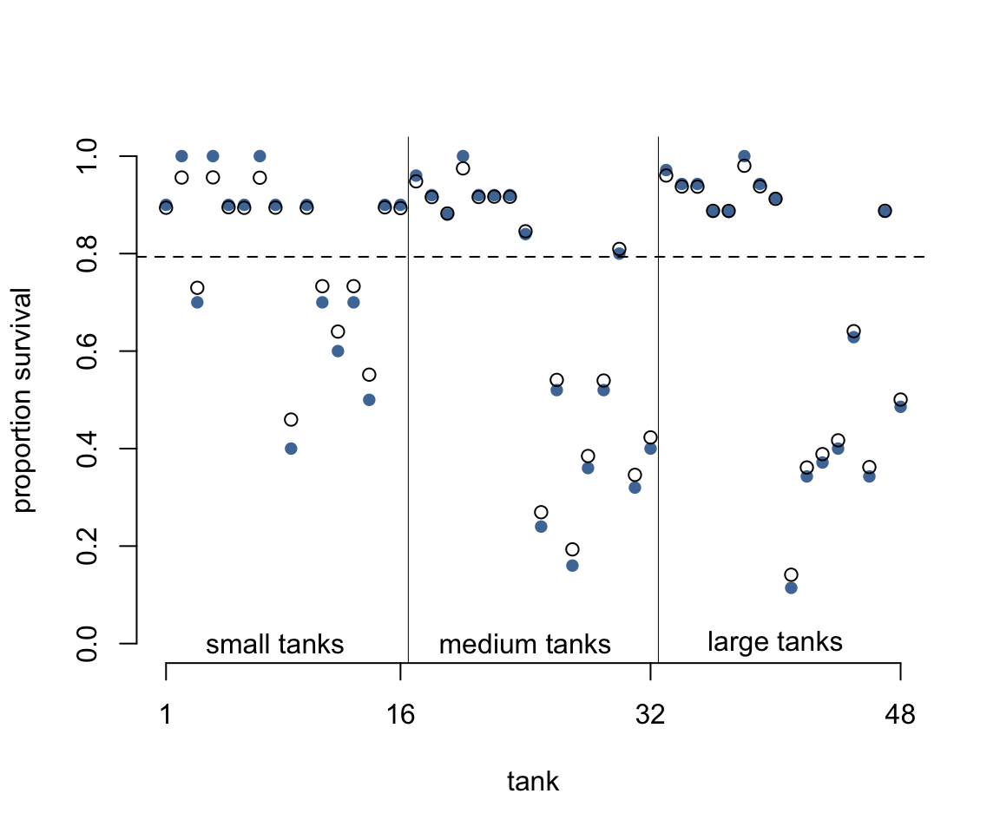
圖 57.1: Empirical proportions of survivors in each tadpole tank (blue), plotted with the 48 per-tank estimates from the multilevel brms model (black circles). The dashed line shows the average survival probability across tanks. Vertical lines divide tanks by initial density. Shrinkage toward the grand mean is visible, especially in smaller tanks.
圖 57.1 中，橫軸是水池的編號，從左往右依次是從 1 到 48 號水池；縱軸是水池中蝌蚪生存下來的比例。圖中藍色的點是原始數據點，也就是實際觀察值 propsurv。黑色的鏤空點則是模型估計的每個水池的截距。水平的橫虛線是估計的所有水池的蝌蚪存活概率的平均值 \(\alpha\)。而圖中的縱向的實線是把水池按照實驗開始時的蝌蚪密度計算的不同類型的池子，從小，中，到大三種類型的池子，各16個。不難注意到我們能看見多層回歸模型給出的推測值都相對觀察值更靠近總體平均生存概率。看起來似乎是黑色鏤空的圓點都更加靠近數據分佈的中心，平均值附近。這種現象又被叫做縮水現象 shrinkage，這是由於增加了超參數之後的多層回歸模型的參數估計受到的限制性的調整 regularization。其次，我們也發現在圖左側，也就是起始蝌蚪密度較小的水池裏，多層回歸模型估計的生存概率值更加靠近總體平均值，也就是縮水得更加明顯，距離觀察數據比密度大的水池要遠。也就是說，在小的水池裏，我們更加容易發現模型估計值和觀察值之間的差別，但是在其實密度大的水池中，觀察值和模型估計值更加接近。最後，如果藍色的點離虛線的總體均值越遠，它和黑色點，多層回歸模型估計值之間的差別越大。
上述三種現象其實是在告訴我們一件很重要的事，也就是把信息綜合起來的話，每一個層級的參數估計都會受益得到提升和改善 (pooling information across clusters to improve estimates) 。這裏的綜合信息 pooling information 的意義是，每一個水池的數據，每一個層級的數據，都含有能提高和改善其他層級參數估計信息 each tank provides information that can be used to improve the estimates for all of the other tanks。這是因爲我們假設了每個水池的截距 log-odds 雖有變化但不獨立而是服從某個正（常）態分佈。有了這個分佈的假設，貝葉斯估計就能幫助我們共享信息給不同的數據層級。
那麼，模型估計的這些青蛙的總體生存概率的分佈是怎樣的呢？我們可以從它對應的模型事後概率分佈中獲得結果繪製成圖。我們先繪製事後概率分佈中前100個 \(\alpha, \sigma\) 組合的平均存活率的分佈：
# show first 100 populations in the posterior
# post already extracted above from b13.2
plot( NULL, xlim = c(-3, 4), ylim = c(0, 0.35),
xlab = "log-odds survive",
ylab = "Density", bty = "n")
for( i in 1:100 )
curve( dnorm(x, post$b_Intercept[i], post$sd_tank__Intercept[i]), add = TRUE,
col = col.alpha("black", 0.2))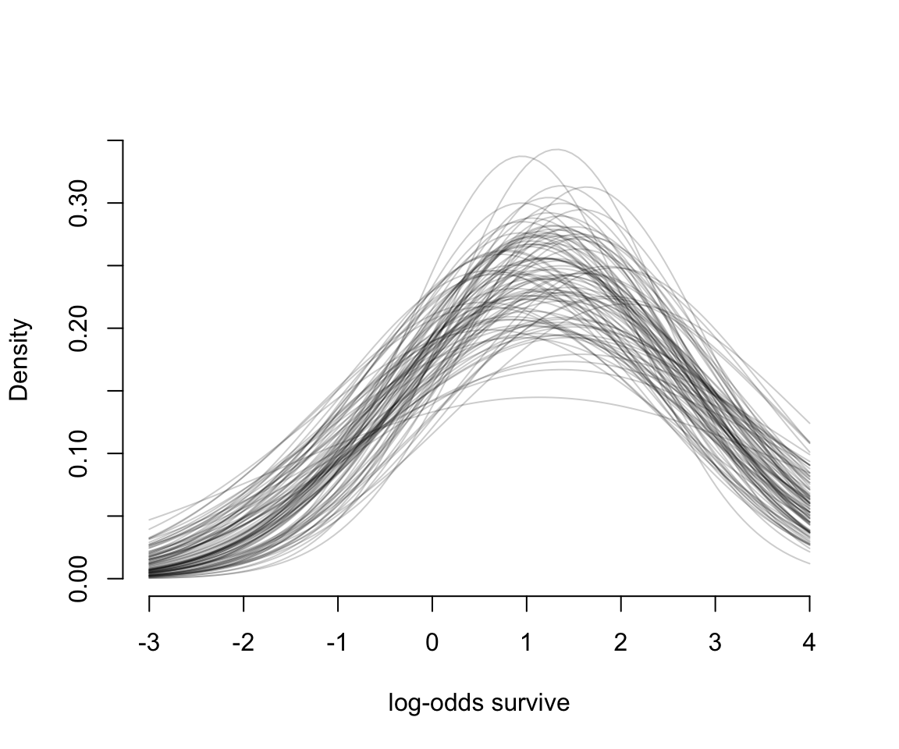
圖 57.2: The inferred population of survival across tanks. 100 Gaussian distributions of the log-odds of survival, sampled from the posteriro of b13.2.
圖 57.2 告訴我們，均值 \(\alpha\) 和它對應的標準差 \(\sigma\) 都是有相當程度不確定性的 (uncertainty)。
# sample 8000 imaginary tanks from the posterior distribution
sim_tanks <- rnorm(8000, post$b_Intercept, post$sd_tank__Intercept)
# transform to probability and visualize
dens( inv_logit(sim_tanks), lwd = 2, adj = 0.1,
xlab = "probability survive", bty = "n")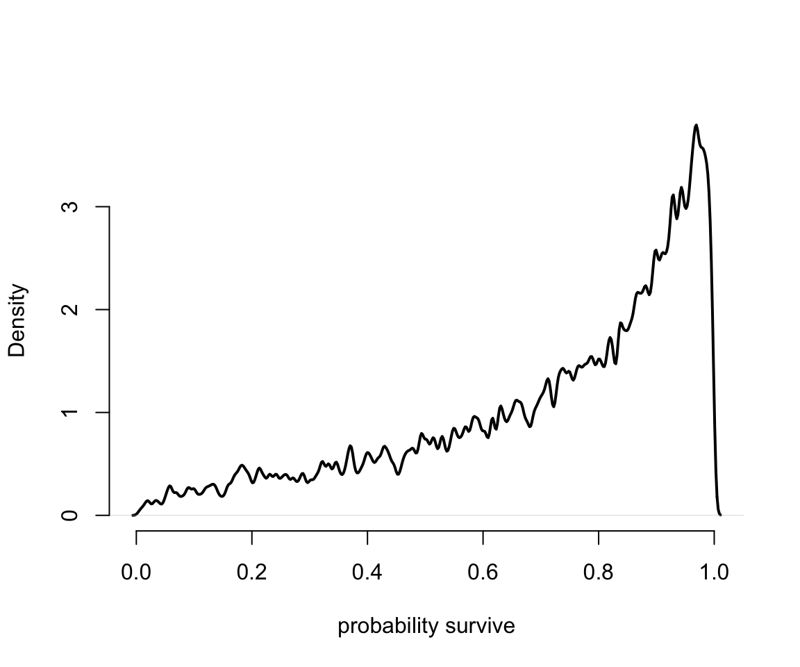
圖 57.3: Survival probabilities for 8000 new simulated tanks, averaging over the posterior distribution in previous figure.
57.2 多層回歸的變化的效應和過度擬合/過低擬合之間的交易 varying effects and the underfitting/overfitting trade-off
使用多層回歸模型使得模型可以估計不同（截距或者斜率）的效應，其最大的好處是能夠給出更加準確的估計。其原理就是使用混合效應模型其實使得模型儘量避免了過度/過低擬合。如果建立模型是爲了預測未知池塘中蝌蚪存活概率的話，我們可以有三種策略：
- 完全合併策略，complete pooling。這方法其實是把總體的水池蝌蚪生存率這一數據看作是不變的 the population survival probability of ponds is invariant，也就是固定一個截距，適用所有的池塘。
- 完全不合併策略，no pooling。這方法類似
m13.1模型的方案，無視水池和水池之間可能存在的相關性，把每個水池都看作的獨立互不影響的。也就是進行性失憶 模型。 - 部分合併策略，partial pooling。這方法其實是
m13.2模型的多層回歸模型方案，通過允許水池之間有相關性，使模型自行學習應有的超參數。
很顯然，第一個方案其實很不切合實際，雖然把所有的數據都彙總到一個點上，但是指望用這唯一的一個估計結果來適用所有的水池的生存概率，認爲所有的水池都會產生相同的結果是不符合現實情況的，這一方案認爲水池和水池之間生存概率不會有差別，沒有變化和靈活性, all ponds are identical。完全合併策略造成的結果就是，樣本的平均值事實上過低擬合了數據的信息 (unterfits the data)。第二個方案則是另一個極端，認爲每一個水池都給出完全不同的結果，即使相同也是偶然，水池之間毫無關聯。圖 57.1 中的藍色實心點就是這樣的模型。用於估計每個點的位置的數據在第二個方案下都會變得很少，所以每一個估計都變得更加不精確。於是，完全不合併策略就是使得模型過度擬合數據 (overfits the data) 。第三個方案就是多層回歸模型增加的混合效應，它的部分合併策略其實是第一個和第二個方案的折衷辦法，使得模型的估計給出更加靈活的結果，也更適合擴展到預測未知數據，同時避免了過度/過低擬合。
爲了展示這個效果，我們可以用計算機模擬一些生存率的蝌蚪水池數據作爲已知的結果，用不同的模型來分析獲得其估計，從而直觀地理解這三種方案的不同思路。
57.2.1 用於產生模擬數據的模型 the model
第一步是設計我們希望產生數據的模型。我們可以直接使用 m13.2 的模型的主體部分：
\[ \begin{aligned} S_i & \sim \text{Binomial}(N_i, p_i) \\ \text{logit}(p_i) & = \alpha_{\text{POND}[i]} \\ \alpha_j & \sim \text{Normal}(\bar{\alpha}, \sigma) \\ \bar{\alpha} & \sim \text{Normal}(0, 1.5) \\ \sigma & \sim \text{Exponential}(1) \end{aligned} \]
為了能順利從這個模型中產生模擬數據，我們需要給模型中賦予真實值的參數有：
- \(\bar{\alpha}\) 是總體池塘蝌蚪存活概率的平均值的對數比值 average log-odds of survival in the entire population of ponds。
- \(\sigma\) 是總體池塘蝌蚪存活概率平均值的對數比值的標準差 the standard deviation of the distribution of log-odds of survival among ponds。
- \(\alpha\) 一系列水池的蝌蚪存過概率的對數比值的真實值，作為模型的變動截距 a vector of individual pond intercepts, one for each pond。
此外，我們還需要設定每個水池的蝌蚪起始樣本量 \(N_i\)，這些都設定完畢之後，就只剩下每個水池可能存活的蝌蚪數量了，這個可以使用二項分佈的隨機值來設定。
a_bar <- 1.5 # mean log-odds of survival in the entire population
sigma <- 1.5 # standar deviation of the distribution of log-odds of survival among ponds
nponds <- 60 # altogether 60 ponds
Ni <- as.integer( rep(c(5, 10, 25, 35), each = 15 )) # 15 ponds with 5, 10, 25, and 35 tadpoles each我們設定了60個水池，起始蝌蚪的數量分別是 5，10，25，35 的池子各有15個。另外 \(\bar{\alpha}, \sigma\) 定義了我們設計下的總體存活率的對數比值 log-odds 的分佈特徵。接下來就是讓計算機生成符合這個分佈條件 \(\text{Normal}(\bar{\alpha}, \sigma)\) 的 60 個水池的存活率的對數比值作為各自的截距。
上面的代碼生成了60個符合設定的均值和標準差的數據，作為每個水池的蝌蚪存活率的對數比值。最後，把這些數據合併成為一個數據框：
## 'data.frame': 60 obs. of 3 variables:
## $ pond : int 1 2 3 4 5 6 7 8 9 10 ...
## $ Ni : int 5 5 5 5 5 5 5 5 5 5 ...
## $ true_a: num 0.567 1.99 -0.138 1.857 3.912 ...生成的數據框 dsim 有三個變量，一個是水池編號，一個是水池起始蝌蚪數量，一個是真實的存活概率的對數比值 (log-odds)。
57.2.2 模擬存活概率結果 simulate survivors
根據我們設定的每個水池的”真實”存活概率的對數比值，我們不難計算每個水池的”真實”存活概率：
\[ p_i = \frac{\exp(\alpha_i)}{1 +\exp(\alpha_i)} \]
使用 logistic 函數可以方便的計算並且讓計算機模擬一系列該水池的蝌蚪存活數量：
## 'data.frame': 60 obs. of 4 variables:
## $ pond : int 1 2 3 4 5 6 7 8 9 10 ...
## $ Ni : int 5 5 5 5 5 5 5 5 5 5 ...
## $ true_a: num 0.567 1.99 -0.138 1.857 3.912 ...
## $ Si : int 4 5 1 5 5 5 2 5 4 4 ...57.2.3 計算完全不合併策略 no-pooling estimates
在這個模型設定下，最簡單快速的是計算完全不合併策略時的結果。這可以直接從前面計算機生成的實驗數據計算獲得。先計算每個水池中蝌蚪的存活概率：
## pond Ni true_a Si p_nopool
## 1 1 5 0.5667 4 0.8
## 2 2 5 1.9900 5 1.0
## 3 3 5 -0.1378 1 0.2
## 4 4 5 1.8568 5 1.0
## 5 5 5 3.9121 5 1.0
## 6 6 5 1.9541 5 1.0數據 dsim 的新增一列 p_nopool 就是每個水池實際觀察到的蝌蚪存活概率。這個計算結果等同於我們把每個水池當作一個啞變量互無關聯時給出的模型估計結果。
57.2.4 計算部分合併策略的結果 partial-pooling estimates
我們來使用 Stan 運行這個部分合併結果的模型
# [LEGACY rethinking — preserved for reference]
dat <- list(
Si = dsim$Si,
Ni = dsim$Ni,
pond = dsim$pond
)
m13.30 <- ulam(
alist(
Si ~ dbinom( Ni, p ),
logit(p) <- a_pond[pond],
a_pond[pond] ~ dnorm( a_bar, sigma ),
a_bar ~ dnorm( 0, 1.5 ),
sigma ~ dexp( 1 )
), data = dat, chains = 4
)
saveRDS(m13.30, "../Stanfits/m13_30.rds")# brms equivalent: varying intercepts for simulated ponds
dsim$pond_f <- factor(dsim$pond)
b13.30 <- brm(
Si | trials(Ni) ~ 1 + (1|pond),
data = dsim, family = binomial,
prior = c(
prior(normal(0, 1.5), class = Intercept),
prior(exponential(1), class = sd)
),
chains = 4, cores = 4,
file = "Stanfits/brm_m13_30"
)上面的模型運行計算的就是最基礎版本的隨機截距模型。我們來看一下它給出的 \(\bar{\alpha}, \sigma\) 的事後分佈情況，下面的結果包含了六十個水池的截距，會很長：
# [LEGACY rethinking — preserved for reference]
m13.30 <- readRDS("../Stanfits/m13_30.rds")
precis( m13.30, depth = 2 )## Family: binomial
## Links: mu = logit
## Formula: Si | trials(Ni) ~ 1 + (1 | pond)
## Data: dsim (Number of observations: 60)
## Draws: 4 chains, each with iter = 2000; warmup = 1000; thin = 1;
## total post-warmup draws = 4000
##
## Multilevel Hyperparameters:
## ~pond (Number of levels: 60)
## Estimate Est.Error l-95% CI u-95% CI Rhat Bulk_ESS Tail_ESS
## sd(Intercept) 1.69 0.23 1.28 2.17 1.00 1199 2409
##
## Regression Coefficients:
## Estimate Est.Error l-95% CI u-95% CI Rhat Bulk_ESS Tail_ESS
## Intercept 1.67 0.26 1.19 2.21 1.01 900 1531
##
## Draws were sampled using sampling(NUTS). For each parameter, Bulk_ESS
## and Tail_ESS are effective sample size measures, and Rhat is the potential
## scale reduction factor on split chains (at convergence, Rhat = 1).下面展示所有60個水池各自的截距估計，相當於原始 precis(depth = 2) 的完整輸出：
## Estimate Est.Error Q2.5 Q97.5
## 1 1.66678 1.0136 -0.15310 3.79938
## 2 2.88072 1.2538 0.68904 5.56577
## 3 -0.65448 0.8874 -2.48233 0.98257
## 4 2.88475 1.2344 0.73614 5.55073
## 5 2.87598 1.2686 0.72120 5.67024
## 6 2.89089 1.2584 0.71001 5.73649
## 7 0.06243 0.8677 -1.64964 1.74399
## 8 2.92324 1.2833 0.72843 5.75666
## 9 1.64666 0.9867 -0.12444 3.81945
## 10 1.63847 0.9820 -0.14633 3.69959
## 11 2.89201 1.2846 0.69685 5.72788
## 12 0.05996 0.8366 -1.62245 1.71441
## 13 2.88321 1.2727 0.69367 5.56676
## 14 2.88852 1.2719 0.69137 5.72663
## 15 2.89993 1.2830 0.72260 5.77763
## 16 1.55860 0.7567 0.21187 3.16879
## 17 -1.46266 0.7925 -3.15930 -0.01128
## 18 1.07075 0.6997 -0.21391 2.54055
## 19 -0.96929 0.6689 -2.39435 0.24908
## 20 1.56511 0.7675 0.17323 3.18944
## 21 -0.14575 0.6292 -1.38759 1.08491
## 22 2.24993 0.8777 0.65400 4.14331
## 23 3.31276 1.1965 1.29790 5.95466
## 24 0.60379 0.6589 -0.66645 1.91771
## 25 3.28410 1.1982 1.30588 5.92657
## 26 2.24235 0.9033 0.63123 4.22661
## 27 1.06135 0.6857 -0.15714 2.51046
## 28 2.26557 0.9497 0.58030 4.35358
## 29 1.55236 0.7469 0.18880 3.12756
## 30 1.04410 0.6703 -0.20522 2.42066
## 31 2.46623 0.6601 1.28707 3.88305
## 32 2.07000 0.5805 1.03259 3.30824
## 33 1.73383 0.5289 0.78051 2.85003
## 34 1.23486 0.4549 0.39787 2.15475
## 35 0.65650 0.4223 -0.15332 1.50760
## 36 3.89057 1.1260 2.09319 6.47573
## 37 -0.98790 0.4473 -1.92659 -0.14857
## 38 -1.20175 0.4711 -2.18028 -0.33926
## 39 0.66593 0.4141 -0.13133 1.52738
## 40 3.86577 1.0920 2.06400 6.30243
## 41 3.85587 1.0781 2.09393 6.29571
## 42 2.45484 0.6583 1.32634 3.92610
## 43 -0.14473 0.3947 -0.90596 0.60202
## 44 0.66205 0.4122 -0.12765 1.50883
## 45 -1.19234 0.4607 -2.15172 -0.33303
## 46 0.01212 0.3472 -0.67245 0.67884
## 47 4.09430 1.0429 2.40207 6.54677
## 48 2.10742 0.5236 1.17630 3.24995
## 49 1.85639 0.4742 1.01462 2.87677
## 50 2.77465 0.6571 1.60460 4.20260
## 51 2.39343 0.5580 1.38614 3.59311
## 52 0.35496 0.3358 -0.29725 1.01432
## 53 2.09254 0.5117 1.17586 3.17624
## 54 4.07686 1.0474 2.30294 6.45572
## 55 1.13169 0.3870 0.38909 1.92694
## 56 2.75623 0.6456 1.63187 4.13093
## 57 0.71898 0.3586 0.03755 1.43917
## 58 4.07460 1.0635 2.31696 6.49206
## 59 1.64148 0.4450 0.82810 2.58793
## 60 2.40075 0.5641 1.38435 3.57039很好，接下來就可以運算每個水池的模型預測存活概率，並且添加到我們預先設定好的實驗數據中去。爲了便於比較，先要計算真實的水池中蝌蚪的存活概率。最後一步，就是計算模型預測的存活率，和實際真實存活率之間的差距了，也叫模型估計誤差。然後把這兩個條件下的估計誤差進行繪製在同一張圖上直觀地比較：
# [LEGACY rethinking — preserved for reference]
m13.30 <- readRDS("../Stanfits/m13_30.rds")
post <- extract.samples( m13.30 )
dsim$p_partpool <- apply( inv_logit(post$a_pond), 2, mean)
dsim <- dsim %>%
mutate(p_true = inv_logit(true_a),
nopool_error = abs(p_nopool - p_true),
partpool_erro = abs(p_partpool - p_true))
# or similarly you can use basic R command
# nopool_erro <- abs( dsim$p_nopool - dsim$p_true )
# partpool_erro <- abs( dsim$p_partpool - dsim$p_true )
plot( 1:60, dsim$nopool_error,
xlab = "Pond",
ylab = "absolute error", bty = "n",
col = rangi2, pch = 16,
ylim = c(0, 0.6))
points( 1:60, dsim$partpool_erro )
# mark posterior mean probability across tanks
error_avg <- dsim %>%
group_by(Ni) %>%
summarise(nopool_avg = mean(nopool_error),
partpool_avg = mean(partpool_erro))
segments(1, error_avg$nopool_avg[1],
16, error_avg$nopool_avg[1],
col = rangi2, lwd = 2)
segments(1, error_avg$partpool_avg[1],
16, error_avg$partpool_avg[1],
col = "black", lwd = 2, lty = 2)
segments(17, error_avg$nopool_avg[2],
32, error_avg$nopool_avg[2],
col = rangi2, lwd = 2)
segments(17, error_avg$partpool_avg[2],
32, error_avg$partpool_avg[2],
col = "black", lwd = 2, lty = 2)
segments(33, error_avg$nopool_avg[3],
46, error_avg$nopool_avg[3],
col = rangi2, lwd = 2)
segments(33, error_avg$partpool_avg[3],
46, error_avg$partpool_avg[3],
col = "black", lwd = 2, lty = 2)
segments(47, error_avg$nopool_avg[4],
60, error_avg$nopool_avg[4],
col = rangi2, lwd = 2)
segments(47, error_avg$partpool_avg[4],
60, error_avg$partpool_avg[4],
col = "black", lwd = 2, lty = 2)
# draw vertical dividers between tank densities
abline( v = 16.5, lwd = 0.5 )
abline( v = 32.5, lwd = 0.5 )
abline( v = 46.5, lwd = 0.5 )
text( 8, 0.6, 'Tiny ponds (5)')
text( 16 + 8, 0.6, 'Small ponds (10)')
text( 32 + 8, 0.6, 'Medium ponds (25)')
text( 46 + 8, 0.6, 'Large ponds (35)')# brms equivalent: extract pond-level intercepts
post_pond <- suppressWarnings(as_draws_df(b13.30))
pond_cols <- grep("^r_pond\\[", names(post_pond), value = TRUE)
a_pond_mat <- sweep(as.matrix(post_pond[, pond_cols]), 1, post_pond$b_Intercept, "+")## Warning: Dropping 'draws_df' class as required metadata was removed.dsim$p_partpool <- inv_logit(colMeans(a_pond_mat))
dsim <- dsim %>%
mutate(p_true = inv_logit(true_a),
nopool_error = abs(p_nopool - p_true),
partpool_erro = abs(p_partpool - p_true))
plot(1:60, dsim$nopool_error,
xlab = "Pond", ylab = "absolute error", bty = "n",
col = rangi2, pch = 16, ylim = c(0, 0.6))
points(1:60, dsim$partpool_erro)
error_avg <- dsim %>%
group_by(Ni) %>%
summarise(nopool_avg = mean(nopool_error),
partpool_avg = mean(partpool_erro))
segments(1, error_avg$nopool_avg[1], 16, error_avg$nopool_avg[1], col = rangi2, lwd = 2)
segments(1, error_avg$partpool_avg[1], 16, error_avg$partpool_avg[1], col = "black", lwd = 2, lty = 2)
segments(17, error_avg$nopool_avg[2], 32, error_avg$nopool_avg[2], col = rangi2, lwd = 2)
segments(17, error_avg$partpool_avg[2], 32, error_avg$partpool_avg[2], col = "black", lwd = 2, lty = 2)
segments(33, error_avg$nopool_avg[3], 46, error_avg$nopool_avg[3], col = rangi2, lwd = 2)
segments(33, error_avg$partpool_avg[3], 46, error_avg$partpool_avg[3], col = "black", lwd = 2, lty = 2)
segments(47, error_avg$nopool_avg[4], 60, error_avg$nopool_avg[4], col = rangi2, lwd = 2)
segments(47, error_avg$partpool_avg[4], 60, error_avg$partpool_avg[4], col = "black", lwd = 2, lty = 2)
abline(v = 16.5, lwd = 0.5); abline(v = 32.5, lwd = 0.5); abline(v = 46.5, lwd = 0.5)
text(8, 0.6, "Tiny ponds (5)"); text(16+8, 0.6, "Small ponds (10)")
text(32+8, 0.6, "Medium ponds (25)"); text(46+8, 0.6, "Large ponds (35)")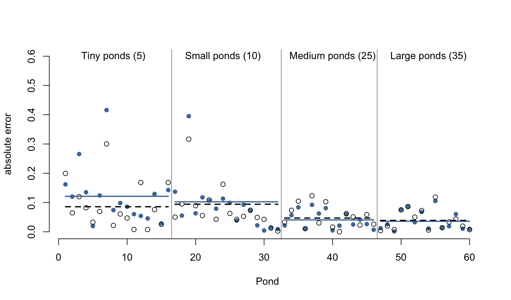
圖 57.4: Error of no-pooling (blue) and partial pooling (black) estimates for simulated ponds. Smaller ponds produce more error, but partial pooling estimates are better on average.
從圖 57.4 中我們首先能夠直接一眼就觀察到的重要信息就是，這兩種方案，一個是完全不合併方案，一個是部分合併方案，無論是哪一種，其實對樣本量大的水池（圖中靠右側的水池）的存活概率估計誤差都比較低。這主要是因爲樣本量越多，估計得越精確。而樣本量較小的水池，途中靠左側的水池中，由於蝌蚪數量有限，即使是部分合併方案使用的隨機截距模型也給出比較大的誤差。其次，藍色線 (完全不合併方案) 幾乎總是在黑色虛線 (隨機截距模型，部分合併方案) 的上方，或者二者在大樣本時，會十分接近。當然隨機截距並不總是更加優越，只是在許許多多的計算中，從長遠來看 (in the long run) 隨機截距模型給出的結果誤差會平均地比較小。第三，藍色線和黑色虛線之間的差距在樣本量越小時，越明顯。也就是說，同樣因爲小樣本會造成結果有估計誤差，隨機截距模型給出的誤差要相對小一些。
那麼，从計算機的模擬計算結果中，我們學到了什麼？記得圖 57.1 中我們見過樣本量越小的池塘的模型結果更加靠近樣本均值的虛線，也就是縮水更加嚴重。但是從計算機模擬的結果來看的話，樣本量越小的池塘的存活概率估計結果是隨機截距模型能給出更加小的誤差估計。這兩個現象並不是偶然發生的。樣本量小的水池，傾向於發生模型的過度擬合 overfitting。由於樣本量較小的水池蘊含的信息量較少，所以它們的模型估計結果更加容易受到樣本均值的影響。也就是被其他樣本量更多的水池的數據的影響。當一個個的水池本身各自的樣本量都相對較多時，你可能會認爲隨機截距或者叫多層回歸模型能給出的估計結果優化就很有限。事實上即便是每個數據層級本身的樣本量也比較大的情況下，使用多層回歸模型來計算也沒有任何壞處。大樣本量的一些層級的估計結果有可能有助於改善較小樣本量層級的結果的預測以及參數的估計結果。所以，平均地看，其實始終應該使用隨機效應模型，也就是部分合併方案的策略，因爲它總是能提供較優的結果估計，而且能夠從數據本身學習獲得應該使用的超參數等用於調節 (regularization) 模型的估計和運行。
下面的代碼有助於我們重複使用已經運行過的模型，減少計算機重複運算的壓力。當你想要重複上述計算機模擬過程的時候，可能會希望讓模型運行其他的模擬數據，採集新的事後分佈樣本：
a <- 1.5
sigma <- 1.5
nponds <- 60
Ni <- as.integer( rep(c(5, 10, 25, 35), each = 15 ))
set.seed(12345)
a_pond <- rnorm( nponds, mean = a, sd = sigma)
dsim <- data.frame( pond = 1:nponds,
Ni = Ni,
true_a = a_pond)
dsim$Si <- rbinom( nponds, prob = inv_logit( dsim$true_a ), size = dsim$Ni )
dsim$p_nopool <- dsim$Si / dsim$Ni# [LEGACY rethinking — preserved for reference]
newdat <- list(Si = dsim$Si,
Ni = dsim$Ni,
pond = 1:nponds)
m13.3new <- stan( fit = m13.30@stanfit,
data = newdat,
chains = 4 )
saveRDS(m13.3new, "../Stanfits/m13_3new.rds")一旦你的計算機已經運行好了一個模型，m13.30，那麼假如只需要修改模型的樣本數據，模型結構不需要改變的話，使用上述的方法會大大提升新模型的運行速度，並且保存結果在 m13.3new 裏面。然後你只需要使用類似的方法重新繪製新數據給出的新結果，而不需要每次再重頭運行模型本身。需要重複利用的模型運算結果已經存儲在了每個 stan 模型中的 stanfit 部分。只要給它新的相同變量的數據框，它就能迅速給出新的事後概率分佈結果。這是非常有用的技巧。在 brms 中可以用 update() 函數達到同樣的效果。
# brms equivalent: refit with new simulated data using update()
b13.3new <- update(b13.30, newdata = dsim,
file = "Stanfits/brm_m13_3new")# [LEGACY rethinking — preserved for reference]
m13.3new <- readRDS("../Stanfits/m13_3new.rds")
post <- extract.samples( m13.3new )
dsim$p_partpool <- apply( inv_logit(post$a_pond), 2, mean)
dsim <- dsim %>%
mutate(p_true = inv_logit(true_a),
nopool_error = abs(p_nopool - p_true),
partpool_erro = abs(p_partpool - p_true))
# or similarly you can use basic R command
# nopool_erro <- abs( dsim$p_nopool - dsim$p_true )
# partpool_erro <- abs( dsim$p_partpool - dsim$p_true )
plot( 1:60, dsim$nopool_error,
xlab = "Pond",
ylab = "absolute error", bty = "n",
col = rangi2, pch = 16,
ylim = c(0, 0.6))
points( 1:60, dsim$partpool_erro )
# mark posterior mean probability across tanks
error_avg <- dsim %>%
group_by(Ni) %>%
summarise(nopool_avg = mean(nopool_error),
partpool_avg = mean(partpool_erro))
segments(1, error_avg$nopool_avg[1],
16, error_avg$nopool_avg[1],
col = rangi2, lwd = 2)
segments(1, error_avg$partpool_avg[1],
16, error_avg$partpool_avg[1],
col = "black", lwd = 2, lty = 2)
segments(17, error_avg$nopool_avg[2],
32, error_avg$nopool_avg[2],
col = rangi2, lwd = 2)
segments(17, error_avg$partpool_avg[2],
32, error_avg$partpool_avg[2],
col = "black", lwd = 2, lty = 2)
segments(33, error_avg$nopool_avg[3],
46, error_avg$nopool_avg[3],
col = rangi2, lwd = 2)
segments(33, error_avg$partpool_avg[3],
46, error_avg$partpool_avg[3],
col = "black", lwd = 2, lty = 2)
segments(47, error_avg$nopool_avg[4],
60, error_avg$nopool_avg[4],
col = rangi2, lwd = 2)
segments(47, error_avg$partpool_avg[4],
60, error_avg$partpool_avg[4],
col = "black", lwd = 2, lty = 2)
# draw vertical dividers between tank densities
abline( v = 16.5, lwd = 0.5 )
abline( v = 32.5, lwd = 0.5 )
abline( v = 46.5, lwd = 0.5 )
text( 8, 0.6, 'Tiny ponds (5)')
text( 16 + 8, 0.6, 'Small ponds (10)')
text( 32 + 8, 0.6, 'Medium ponds (25)')
text( 46 + 8, 0.6, 'Large ponds (35)')# brms equivalent: extract pond-level intercepts from refitted model
post_new <- suppressWarnings(as_draws_df(b13.3new))
pond_cols_new <- grep("^r_pond\\[", names(post_new), value = TRUE)
a_pond_new <- sweep(as.matrix(post_new[, pond_cols_new]), 1, post_new$b_Intercept, "+")## Warning: Dropping 'draws_df' class as required metadata was removed.dsim$p_partpool <- inv_logit(colMeans(a_pond_new))
dsim <- dsim %>%
mutate(p_true = inv_logit(true_a),
nopool_error = abs(p_nopool - p_true),
partpool_erro = abs(p_partpool - p_true))
plot(1:60, dsim$nopool_error,
xlab = "Pond", ylab = "absolute error", bty = "n",
col = rangi2, pch = 16, ylim = c(0, 0.6))
points(1:60, dsim$partpool_erro)
error_avg <- dsim %>%
group_by(Ni) %>%
summarise(nopool_avg = mean(nopool_error),
partpool_avg = mean(partpool_erro))
segments(1, error_avg$nopool_avg[1], 16, error_avg$nopool_avg[1], col = rangi2, lwd = 2)
segments(1, error_avg$partpool_avg[1], 16, error_avg$partpool_avg[1], col = "black", lwd = 2, lty = 2)
segments(17, error_avg$nopool_avg[2], 32, error_avg$nopool_avg[2], col = rangi2, lwd = 2)
segments(17, error_avg$partpool_avg[2], 32, error_avg$partpool_avg[2], col = "black", lwd = 2, lty = 2)
segments(33, error_avg$nopool_avg[3], 46, error_avg$nopool_avg[3], col = rangi2, lwd = 2)
segments(33, error_avg$partpool_avg[3], 46, error_avg$partpool_avg[3], col = "black", lwd = 2, lty = 2)
segments(47, error_avg$nopool_avg[4], 60, error_avg$nopool_avg[4], col = rangi2, lwd = 2)
segments(47, error_avg$partpool_avg[4], 60, error_avg$partpool_avg[4], col = "black", lwd = 2, lty = 2)
abline(v = 16.5, lwd = 0.5); abline(v = 32.5, lwd = 0.5); abline(v = 46.5, lwd = 0.5)
text(8, 0.6, "Tiny ponds (5)"); text(16+8, 0.6, "Small ponds (10)")
text(32+8, 0.6, "Medium ponds (25)"); text(46+8, 0.6, "Large ponds (35)")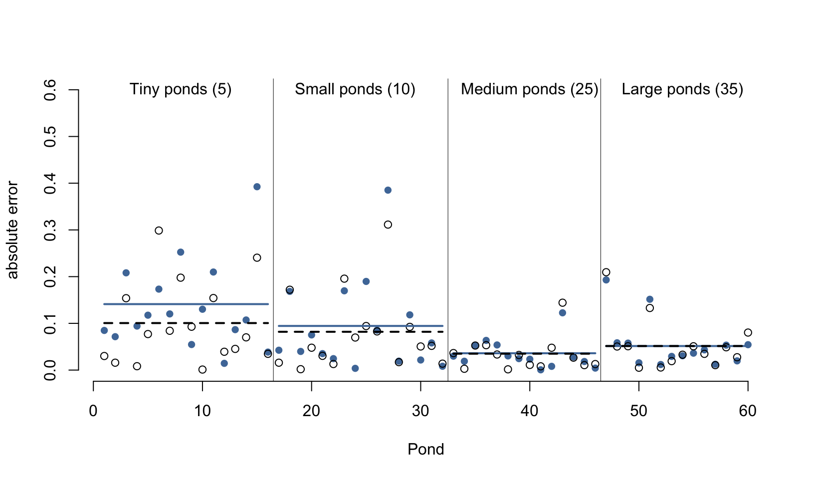
圖 57.5: New simulated data fed to brms model. Blue = no-pooling error; black = partial pooling error.
57.3 使用多於一個類別作爲多層回歸的隨機變量 more than one type of cluster
我們當然可以在同一個模型中加入更多的 \((>1)\) 分層變量。例如我們在 Chapter 55.1.1 看到的黑猩猩社會學數據 data(chimpanzees)。
## 'data.frame': 504 obs. of 8 variables:
## $ actor : int 1 1 1 1 1 1 1 1 1 1 ...
## $ recipient : int NA NA NA NA NA NA NA NA NA NA ...
## $ condition : int 0 0 0 0 0 0 0 0 0 0 ...
## $ block : int 1 1 1 1 1 1 2 2 2 2 ...
## $ trial : int 2 4 6 8 10 12 14 16 18 20 ...
## $ prosoc_left : int 0 0 1 0 1 1 1 1 0 0 ...
## $ chose_prosoc: int 1 0 0 1 1 1 0 0 1 1 ...
## $ pulled_left : int 0 1 0 0 1 1 0 0 0 0 ...這個數據裏，pulled_left 是從屬於每一頭黑猩猩個體的 (within a cluster of pulls belonging to an individual chimpanzee)。同時呢，這些拉動左側槓桿的行爲其實又是從屬於一個個實驗設計的 block 下的。這些 block 實際標記的是同一天進行的實驗。於是這裏出現了每個觀察數據的結果變量 pulled_left 既從屬於實驗對象 – 黑猩猩個體 (1 to 7)，也從屬於實驗 block (1 to 6) 的現象。所以給黑猩猩個體和實驗 block 同時設置隨機截距也是沒有問題的。這裏我們利用這個特殊的數據來嘗試設計並運行含有兩個隨機截距結構的模型。這樣我們可以使用數據本身蘊含的信息充分學習應有的超參數用於我們已知的部分合併策略 partial pooling，從而提升各個參數的估計結果和效率，並且同時獲得不同的黑猩猩之間的方差，和不同的實驗 block 之間的方差。
57.3.1 黑猩猩數據的多層回歸模型 multilevel chimpanzees
我們可以直接利用 Chapter 55.1.1 一開始設定好的模型，增加 block 的隨機截距：
\[ \begin{aligned} L_i & \sim \text{Binomial}(1, p_i) \\ \text{logit}(p_i) & = \alpha_{\text{ACTOR}[i]} + \color{green}{\gamma_{\text{BLOCK}[i]}} + \beta_{\text{TREATMENT}[i]}\\ \beta_j & \sim \text{Normal}(0, 0.5) \;\;\;\; \text{for } j = 1,\dots, 4\\ \alpha_j & \sim \text{Normal}(\bar{\alpha}, \sigma_\alpha) \;\;\;\; \text{for } j = 1, \dots, 7 \\ \color{green}{\gamma_j } &\; \color{green}{\sim \text{Normal}(0, \sigma_\gamma)\;\;\;\;\; \text{for } j = 1, \dots, 6} \\ \bar{\alpha} & \sim \text{Normal}(0, 1.5) \\ \sigma_\alpha & \sim \text{Exponential} (1) \\ \color{green}{\sigma_\gamma} & \;\color{green}{ \sim \text{Exponential}(1)} \end{aligned} \]
從模型結構上，我們給不同的分層變量設置了自己的參數向量，對於每隻黑猩猩 actor，我們設定的參數向量是 \(\alpha\)，它有7個元素，長度是 7，因爲一共有七隻黑猩猩；實驗的 block 有 6 個，所以它的參數向量長度是 6。這兩個分層變量需要有自己的方差（標準差）參數，也就是 \(\sigma_\alpha, \sigma_\gamma\)。要注意的一點是只能給一個總體平均值 \(\bar{\alpha}\) 給兩個隨機截距。下面的代碼就可以運行上述模型：
d <- d %>%
mutate(treatment = 1 + prosoc_left + 2*condition,
treatment_f = factor(treatment),
actor_f = factor(actor),
block_f = factor(block))
table(d$treatment)##
## 1 2 3 4
## 126 126 126 126dat_list <- list(
pulled_left = d$pulled_left,
actor = d$actor,
block_id = d$block,
treatment = as.integer(d$treatment)
)# [LEGACY rethinking — preserved for reference]
set.seed(13)
m13.4 <- ulam(
alist(
pulled_left ~ dbinom( 1, p ) ,
logit(p) <- a[actor] + g[block_id] + b[treatment],
b[treatment] ~ dnorm( 0, 0.5 ),
## adaptive priors
a[actor] ~ dnorm( a_bar, sigma_a ),
g[block_id] ~ dnorm( 0, sigma_g ),
## hyper-priors
a_bar ~ dnorm( 0, 1.5 ),
sigma_a ~ dexp(1),
sigma_g ~ dexp(1)
), data = dat_list, chains = 4, cores = 4, log_lik = TRUE
)
saveRDS(m13.4, "../Stanfits/m13_4.rds")# brms equivalent: varying intercepts for actor + block
b13.4 <- brm(
pulled_left ~ 1 + treatment_f + (1|actor) + (1|block),
data = d, family = bernoulli,
prior = c(
prior(normal(0, 1.5), class = Intercept),
prior(normal(0, 0.5), class = b),
prior(exponential(1), class = sd)
),
chains = 4, cores = 4,
file = "Stanfits/brm_m13_4"
)# [LEGACY rethinking — preserved for reference]
m13.4 <- readRDS("../Stanfits/m13_4.rds")
precis(m13.4, depth = 2)## Family: bernoulli
## Links: mu = logit
## Formula: pulled_left ~ 1 + treatment_f + (1 | actor) + (1 | block)
## Data: d (Number of observations: 504)
## Draws: 4 chains, each with iter = 2000; warmup = 1000; thin = 1;
## total post-warmup draws = 4000
##
## Multilevel Hyperparameters:
## ~actor (Number of levels: 7)
## Estimate Est.Error l-95% CI u-95% CI Rhat Bulk_ESS Tail_ESS
## sd(Intercept) 2.05 0.65 1.14 3.62 1.00 1377 2195
##
## ~block (Number of levels: 6)
## Estimate Est.Error l-95% CI u-95% CI Rhat Bulk_ESS Tail_ESS
## sd(Intercept) 0.21 0.17 0.01 0.63 1.00 1385 1978
##
## Regression Coefficients:
## Estimate Est.Error l-95% CI u-95% CI Rhat Bulk_ESS Tail_ESS
## Intercept 0.47 0.70 -0.91 1.87 1.01 744 1367
## treatment_f2 0.46 0.25 -0.02 0.95 1.00 4044 3118
## treatment_f3 -0.41 0.24 -0.90 0.06 1.00 3787 2833
## treatment_f4 0.35 0.24 -0.11 0.82 1.00 3145 2710
##
## Draws were sampled using sampling(NUTS). For each parameter, Bulk_ESS
## and Tail_ESS are effective sample size measures, and Rhat is the potential
## scale reduction factor on split chains (at convergence, Rhat = 1).下面是每隻黑猩猩 (actor) 和每個實驗區塊 (block) 各自的截距估計，相當於 precis(depth = 2) 的個體層級輸出：
## Estimate Est.Error Q2.5 Q97.5
## 1 -0.4413 0.3004 -1.04793 0.1245
## 2 4.6095 1.2822 2.76890 7.6300
## 3 -0.7402 0.3042 -1.32829 -0.1326
## 4 -0.7388 0.3047 -1.38821 -0.1514
## 5 -0.4400 0.2961 -1.02184 0.1245
## 6 0.4994 0.3017 -0.08441 1.1155
## 7 2.0304 0.4129 1.26556 2.8815## Estimate Est.Error Q2.5 Q97.5
## 1 0.3094 0.7236 -1.1083 1.726
## 2 0.5112 0.7075 -0.9072 1.905
## 3 0.5279 0.7091 -0.8943 1.931
## 4 0.4841 0.7102 -0.9284 1.874
## 5 0.4401 0.7112 -0.9599 1.883
## 6 0.5824 0.7126 -0.8508 1.994首先，我們從 n_eff 可以看出各個參數的有效樣本量差別其實較大。這樣的現象在結構複雜的模型進行事後樣本採樣的過程中其實很常見。這可能會有許多不同的原因，其中之一是模型中可能有一個或者幾個在樣本採集時花了較多的時間在某個邊界值附近不停地採集樣本。這裏很顯然就是 sigma_g，它花了很多時間在它的起始值 0 附近不停地採集樣本，它的 Rhat 值也顯然大於 1。這些都是採樣效率低下的信號。
# brms equivalent: caterpillar / forest plot
mcmc_areas(b13.4, regex_pars = c("^b_", "^sd_", "^r_actor", "^r_block"),
prob = 0.89, prob_outer = 0.97) +
theme_minimal()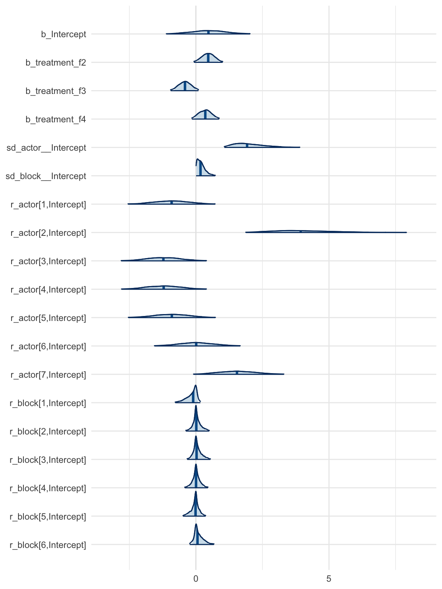
圖 57.6: Caterpillar plot of brms multilevel chimpanzee model b13.4. Actor variation is much larger than block variation.
其次，觀察 sigma_a 和 sigma_g 會很容易就發現不同黑猩猩之間的變化顯然比不同天進行實驗的變化要顯著的多。這一現象可以用圖 57.7 展示得更加清楚。
# [LEGACY rethinking — preserved for reference]
post <- extract.samples( m13.4 )
rethinking::dens( post$sigma_a ,
xlim = c(0, 4),
ylim = c(0, 3.8),
col = rangi2,
bty = "n",
lwd = 2,
xlab = "standard deviation",
ylab = "Density")
rethinking::dens( post$sigma_g , add = TRUE,
lwd = 2)
text( 0.8, 02.5, 'block')
text( 3, 0.5, 'actor', col = rangi2)# brms equivalent: compare sd_actor vs sd_block
post_chimp <- suppressWarnings(as_draws_df(b13.4))
dens(post_chimp$sd_actor__Intercept,
xlim = c(0, 4), ylim = c(0, 3.8),
col = rangi2, bty = "n", lwd = 2,
xlab = "standard deviation", ylab = "Density")
dens(post_chimp$sd_block__Intercept, add = TRUE, lwd = 2)
text(0.8, 2.5, "block")
text(3, 0.5, "actor", col = rangi2)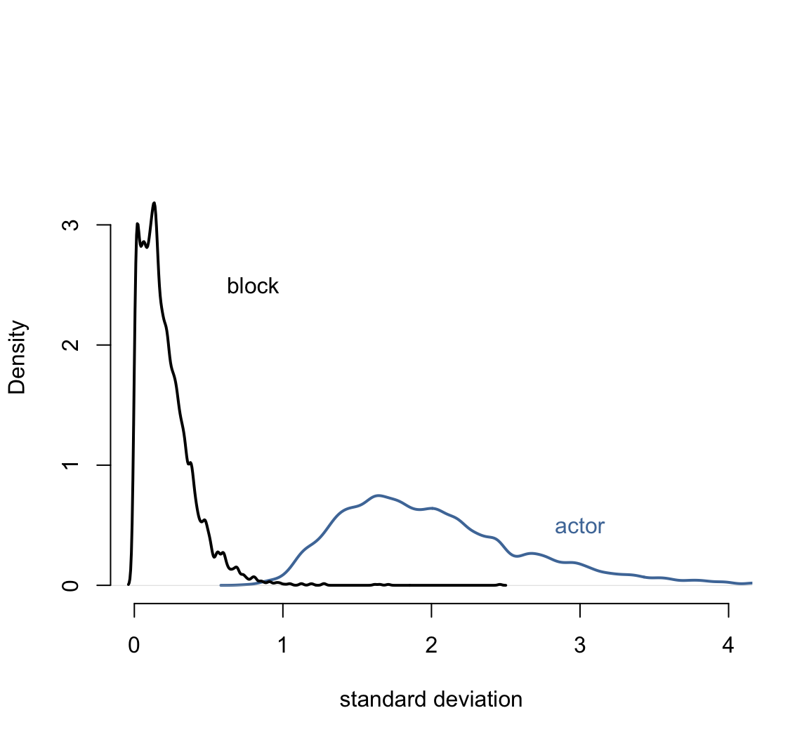
圖 57.7: Posterior distributions of the standard deviations of varying intercepts by actor (blue) and block (black).
這也就是說增加不同實驗 block 的隨機截距並沒有讓模型增加的過度擬合的風險。我們來比較一下只有一個黑猩猩隨機截距時的模型和 m13.4 之間的模型信息差別：
# [LEGACY rethinking — preserved for reference]
set.seed(14)
m13.5 <- ulam(
alist(
pulled_left ~ dbinom( 1, p ),
logit(p) <- a[actor] + b[treatment] ,
b[treatment] ~ dnorm( 0, 0.5 ),
a[actor] ~ dnorm( a_bar, sigma_a ),
a_bar ~ dnorm( 0, 1.5 ),
sigma_a ~ dexp(1)
), data = dat_list, chains = 4, cores = 4, log_lik = TRUE
)
saveRDS(m13.5, "../Stanfits/m13_5.rds")# brms equivalent: varying intercepts for actor only (no block)
b13.5 <- brm(
pulled_left ~ 1 + treatment_f + (1|actor),
data = d, family = bernoulli,
prior = c(
prior(normal(0, 1.5), class = Intercept),
prior(normal(0, 0.5), class = b),
prior(exponential(1), class = sd)
),
chains = 4, cores = 4,
file = "Stanfits/brm_m13_5"
)# [LEGACY rethinking — preserved for reference]
m13.5 <- readRDS("../Stanfits/m13_5.rds")
compare(m13.4, m13.5)b13.4 <- add_criterion(b13.4, "waic")
b13.5 <- add_criterion(b13.5, "waic")
print(loo_compare(b13.4, b13.5, criterion = "waic"))## elpd_diff se_diff
## b13.5 0.0 0.0
## b13.4 -0.4 0.8從 m13.4 和 m13.5 兩個模型之間的比較結果來看，即便 m13.4 中多增加了 7 個未知參數，但是 pWAIC 的比較，也就是實際有效參數個數之間的差只有 2。這主要是因爲 block 的事後分佈的方差其實十分接近 0，所以表示這個 block 部分的隨機截距部分增加的參數的實際結果都接近 0。我們的多層回歸模型雖然可以做到增加實驗 block 的隨機截距，但是增加這個隨機截距對模型並沒有顯著的改善，可以說沒有太多幫助。
57.4 分散轉換與非中心型先驗概率 divergent transition and non-centered priors
使用並運行多層回歸模型時，Stan 經常可能送給你一個莫名其妙的警告，類似：
There were 15 divergent transitions after warmup.具體原因可能有很多，有主要兩種方式來克服這個警告。第一種是使用更多的 burn-in 或者叫做 warm-up，並且調整 Stan 裏的設置採樣跳躍幅度的變量 adapt_delta，它默認是 0.8，把它改成0.9以上（只能是小於1的數值）的數字之後跳躍採集樣本的幅度會縮小一些，從而改善事後樣本採集的代表性，一定程度上可以避免看見上述警告。但是有些多層回歸模型不論你怎麼調整這個跳躍幅度，增加採樣的 burn-in 過程，它始終都無法給出合適的事後樣本分佈。這時候需要使用的技巧是重新改寫你的模型。很多統計學模型你可以轉換思路用別的方式來表達在數學上涵義相同的模型。這個方法又被叫做再參數化 (reparameterize)。
下面是兩個簡單的實例。
brms 使用者注意: 上述關於 divergent transitions 和非中心化參數化的討論主要針對直接使用
ulam()/Stan 的情況。brms內部已經自動處理了非中心化的參數化 (non-centered parameterization)，大多數情況下不需要使用者手動操作。如果brms模型仍然出現 divergent transitions 警告，可以增大adapt_delta參數（例如control = list(adapt_delta = 0.99)）。以下的魔鬼漏斗實例我們使用rstan直接編寫 Stan 代碼來演示中心化與非中心化參數化的差異，因為這類純粹的聯合分佈採樣問題不屬於brms的回歸建模範疇。
57.4.1 魔鬼的漏斗 the devil’s funnel
我們不需要用複雜的模型就能體驗到 Stan 給出的分散轉換 divergent transition 警告。假如有兩個簡單的變量 \(v, x\) 他們之間的關係是：
\[ \begin{aligned} v & \sim \text{Normal}(0, 3) \\ x & \sim \text{Normal}(0, \exp(v)) \end{aligned} \]
沒有特別的數據，只有這樣兩個互相有聯繫的聯合分佈需要我們嘗試去採集樣本。這是典型的多層回歸結構模型，因爲變量 \(x\) 的方差由另一個變量 \(v\) 來決定。這個模型的運行程序如下：
# [LEGACY rethinking — preserved for reference]
m13.7 <- ulam(
alist(
v ~ normal(0, 3),
x ~ normal(0, exp(v))
), data = list(N = 1), chains = 4
)
saveRDS(m13.7, "../Stanfits/m13_7.rds")# rstan equivalent: centered parameterization (devil's funnel)
stan_code_centered <- "
data { int N; }
parameters {
real v;
real x;
}
model {
v ~ normal(0, 3);
x ~ normal(0, exp(v));
}
"
fit_m13.7 <- rstan::stan(
model_code = stan_code_centered,
data = list(N = 1),
chains = 4, cores = 4
)你會很顯然看見一連串的警告，叫你去看這個看那個求助啥的：
There were 78 divergent transitions after warmup. See
http://mc-stan.org/misc/warnings.html#divergent-transitions-after-warmup
to find out why this is a problem and how to eliminate them.There were 2 transitions after warmup that exceeded the maximum treedepth. Increase max_treedepth above 10. See
http://mc-stan.org/misc/warnings.html#maximum-treedepth-exceededThere were 2 chains where the estimated Bayesian Fraction of Missing Information was low. See
http://mc-stan.org/misc/warnings.html#bfmi-lowExamine the pairs() plot to diagnose sampling problems
The largest R-hat is 1.15, indicating chains have not mixed.
Running the chains for more iterations may help. See
http://mc-stan.org/misc/warnings.html#r-hatBulk Effective Samples Size (ESS) is too low, indicating posterior means and medians may be unreliable.
Running the chains for more iterations may help. See
http://mc-stan.org/misc/warnings.html#bulk-essTail Effective Samples Size (ESS) is too low, indicating posterior variances and tail quantiles may be unreliable.
Running the chains for more iterations may help. See
http://mc-stan.org/misc/warnings.html#tail-ess這個只有兩個參數需要估計的模型運行給出的事後概率分佈也十分地糟糕，上面的警告中給出了相當多的分散轉換 (divergent transitions) ，下面的模型運行結果總結也給出了特別差勁的 n_eff, Rhat：
# [LEGACY rethinking — preserved for reference]
m13.7 <- readRDS("../Stanfits/m13_7.rds")
precis(m13.7)## mean se_mean sd 2.5% 25% 50% 75% 97.5% n_eff Rhat
## v 2.600 0.7776 1.926 -0.6458 0.941 2.5958 4.023 6.475 6.132 1.293
## x 1.709 12.9276 257.755 -228.8721 -5.922 0.2063 7.081 228.741 397.537 1.009看一下它可憐的採樣軌跡圖 trace plot ：
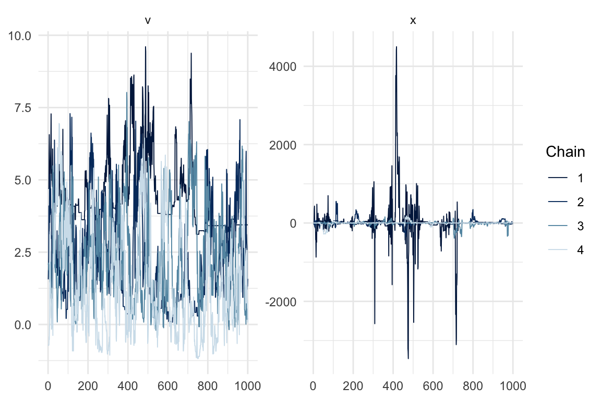
圖 57.8: Trace plot of the centered devil’s funnel model (rstan). Note the poor mixing, especially for x.
我們可以簡單地通過修改模型的構建模式來克服這個問題。因爲變量 \(x\) 的方差取決於 \(v\)：
\[ x \sim \text{Normal}(0, \exp(v)) \]
變量 \(v\) 決定了 \(x\) 的方差大小，上面的這種模型結構被叫做參數中心化 (centered parameterization)，其涵義就是一個參數的分佈由另一個參數或者多個參數來決定。參數中心化之外的另一種選擇是參數非中心化 (non-centered parameterization)。這個非中心化就是把參數之間的依賴關係保留，但是在寫成模型的時候儘量避免在指定分佈的那行中加入兩個參數。例如可以把 m13.7 的表達式改寫成：
\[ \begin{aligned} v & \sim \text{Normal}(0, 3) \\ z & \sim \text{Normal}(0, 1) \\ x & = z \exp(v) \end{aligned} \]
很多人可能一開始不理解爲什麼要這樣寫。但是仔細想想應該不難理解，這其實是我們平時在把觀察值標準化的一個逆向過程。我們在把某個變量標準化的過程是怎樣的？通常是把它減去自己的平均值，然後除以自己的標準差。新產生的變量就是一個均值爲0，標準差是1的標準正（常）態分佈。也就是說，上面的表達式裏，我們通過 \(z\)，一個標準正（常）態分佈變量，把 \(x\) 和 \(v\) 之間的關係串聯起來。\(x\) 本身的均值是零，它除以自己的標準差 \(\frac{x}{\exp(v)}\) 就成爲了一個標準正（常）態的變量 \(z\)。經過這一番等價轉換之後模型變得可以順利在 Stan 裏被運行和採樣了。
# [LEGACY rethinking — preserved for reference]
m13.7nc <- ulam(
alist(
v ~ normal(0, 3),
z ~ normal(0, 1),
gq> real[1]: x <<- z*exp(v)
), data = list(N = 1), chains = 4
)
saveRDS(m13.7nc, "../Stanfits/m13_7nc.rds")# rstan equivalent: non-centered parameterization
stan_code_nc <- "
data { int N; }
parameters {
real v;
real z;
}
transformed parameters {
real x;
x = z * exp(v);
}
model {
v ~ normal(0, 3);
z ~ normal(0, 1);
}
"
fit_m13.7nc <- rstan::stan(
model_code = stan_code_nc,
data = list(N = 1),
chains = 4, cores = 4
)整個世界恢復了安靜。你看模型運行的結果也是正常的了：
# [LEGACY rethinking — preserved for reference]
m13.7nc <- readRDS("../Stanfits/m13_7nc.rds")
precis(m13.7nc)## mean se_mean sd 2.5% 25% 50% 75% 97.5% n_eff Rhat
## v 0.106708 0.04909 2.9877 -5.694 -1.9046 0.09221341 2.1194 5.972 3704 0.9997
## z 0.006468 0.01578 0.9972 -1.911 -0.6619 -0.00693211 0.6904 1.944 3994 0.9992
## x 1.638682 12.87420 678.6352 -97.463 -0.6158 -0.00005239 0.6111 146.962 2779 1.0003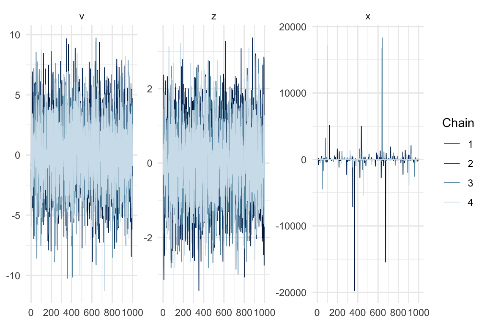
圖 57.9: Trace plot of the non-centered devil’s funnel model (rstan). Much better mixing compared to the centered version.
如果我們把此時採樣成功的 \(x\) 和 \(v\) 之間繪製散點圖，你就會直觀的看見這個像魔鬼一樣的漏斗的真實形狀：
# [LEGACY rethinking — preserved for reference]
dat.sam <- extract.samples(m13.7nc)
plot(dat.sam$x,
dat.sam$v,
bty = "n",
xlab = "x",
ylab = "v")post_nc <- rstan::extract(fit_m13.7nc)
plot(post_nc$x, post_nc$v,
bty = "n", xlab = "x", ylab = "v",
xlim = c(-4000, 4000), ylim = c(-12, 12))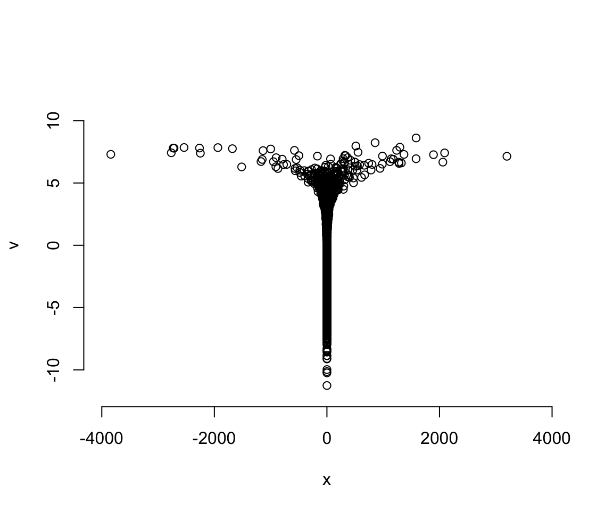
圖 57.10: The devil’s funnel (rstan). The funnel shape arises because when v is large and negative, x is tightly constrained near zero, but when v is positive, x can spread widely.
我們成功地對這樣的近乎畸形的變量實施了轉換數據之後的事後樣本採集。
57.4.2 參數非中心化的黑猩猩數據
接下來我們來試圖解決黑猩猩數據中使用多層回歸模型時出現的分散轉移 divergent transition 問題。當時我們的 m13.4 試圖給 block 增加隨機效應，當時在設定參數的先驗概率分佈時，設定了兩個參數在相同的行裏，他們也是導致模型運行報警的原因。現在我們可以來試着解決它。
\[ \begin{aligned} L_i & \sim \text{Binomial}(1, p_i) \\ \text{logit}(p_i) & = \alpha_{\text{ACTOR}[i]} + \color{green}{\gamma_{\text{BLOCK}[i]}} + \beta_{\text{TREATMENT}[i]}\\ \beta_j & \sim \text{Normal}(0, 0.5) \;\;\;\; \text{for } j = 1,\dots, 4\\ \alpha_j & \sim \text{Normal}(\bar{\alpha}, \sigma_\alpha) \;\;\;\; \text{for } j = 1, \dots, 7 \\ \color{green}{\gamma_j } &\; \color{green}{\sim \text{Normal}(0, \sigma_\gamma)\;\;\;\;\; \text{for } j = 1, \dots, 6} \\ \bar{\alpha} & \sim \text{Normal}(0, 1.5) \\ \sigma_\alpha & \sim \text{Exponential} (1) \\ \color{green}{\sigma_\gamma} & \;\color{green}{ \sim \text{Exponential}(1)} \end{aligned} \]
在對模型進行重新參數化之前，我們可以先試着在 Stan 內部嘗試調整 adapt_delta ，它原本默認的大小是 0.95：
# [LEGACY rethinking — preserved for reference]
set.seed(2020)
m13.4b <- ulam(m13.4, chains = 4,
cores = 4,
control = list(adapt_delta = 0.99))
saveRDS(m13.4b, "../Stanfits/m13_4b.rds")# [LEGACY rethinking — preserved for reference]
m13.4b <- readRDS("../Stanfits/m13_4b.rds")
divergent(m13.4b)可見修改這個 adapt_delta 也沒有辦法提升太多，它依然在報錯。當然偶爾也能真的解決問題，實在是在看你的運氣。而且很多時候，即使它不再通過電腦系統警告，它實際採集的事後樣本也是十分低效的。你可以觀察 precis(m13.4b) 給出的 n_eff，也就是有效樣本量其實很多都還是小於500的。實際使用4条獨立採集鏈每條500個獨立樣本的總樣本量應該在2000左右。
如果通過修改參數的形式使之去中心化，則能夠大大改善模型的運行。這個模型裏需要修改參數化的主要是這兩行：
\[ \begin{aligned} \alpha_j & \sim \text{Normal}(\bar\alpha, \sigma_\alpha) & \text{[intercepts for actors]}\\ \gamma_j & \sim \text{Normal}(0, \sigma_\gamma)& \text{[intercepts for blocks]} \end{aligned} \]
這裏面其實有三個“中心化”的參數：\(\bar\alpha, \sigma_\alpha, \sigma_\gamma\)。使用類似 m13.7nc 的方法，我們需要爲他們設定標準化的替代參數：
\[ \begin{aligned} L_i & \sim \text{Binomial}(1, p_i) \\ \text{logit}(p_i) & = \color{lightblue}{\underbrace{\bar\alpha + z_{\text{ACTOR[i]}}\sigma_\alpha}_{\alpha_\text{ACTOR[i]}}} + \color{lightblue}{\underbrace{x_{\text{BLOCK}[i]}\sigma_\gamma}_{\gamma_\text{BLOCK[i]}}} + \beta_{\text{TREATMENT}[i]} \\ \beta_j & \sim \text{Normal}(0, 0.5), \text{ for } j = 1,\dots,4 \\ \color{lightblue}{z_j} & \color{lightblue}{\; \sim \text{Normal}(0,1)} & \text{[Standardized actor intercepts]} \\ \color{lightblue}{x_j} & \color{lightblue}{\; \sim \text{Normal}(0,1)} & \text{[Standardized block intercepts]} \\ \bar{\alpha} & \sim \text{Normal}(0, 1.5) \\ \sigma_\alpha & \sim \text{Exponential}(1) \\ \sigma_\gamma & \sim \text{Exponential}(1) \end{aligned} \]
不難發現經過修改厚的模型中向量 \(z\) 提供了標準化的 actor 隨機截距，\(x\) 提供了標準化的 block 隨機截距。每頭大猩猩 actor 的隨機截距實際被定義爲：
\[ \alpha_j = \bar\alpha + z_j \sigma_\alpha \]
每個實驗區塊 block 的隨機截距被定義爲：
\[ \gamma_j = x_j\sigma_\gamma \]
現在我們來運行這個被重新改寫過的 m13.4 模型：
# [LEGACY rethinking — preserved for reference]
set.seed(13)
m13.4nc <- ulam(
alist(
pulled_left ~ dbinom(1, p),
logit(p) <- a_bar + z[actor]*sigma_a + # actor intercepts
x[block_id]*sigma_g + # block intercepts
b[treatment] ,
b[treatment] ~ dnorm( 0, 0.5 ),
z[actor] ~ dnorm( 0, 1 ),
x[block_id] ~ dnorm( 0, 1 ),
a_bar ~ dnorm( 0, 1.5 ),
sigma_a ~ dexp(1),
sigma_g ~ dexp(1),
gq> vector[actor]: a <<- a_bar + z*sigma_a,
gq> vector[block_id]: g<<- x*sigma_g
), data = dat_list, chains = 4, cores = 4
)
saveRDS(m13.4nc, "../Stanfits/m13_4nc.rds")m13.4nc 的 n_eff 顯然比 m13.4 改善很多，而且也沒有報錯：
# [LEGACY rethinking — preserved for reference]
m13.4nc <- readRDS("../Stanfits/m13_4nc.rds")
precis(m13.4nc, depth = 2)用圖形來比較 m13.4 和 m13.4nc 二者之間的 n_eff 更加直觀：
# [LEGACY rethinking — preserved for reference]
precis_c <- precis( m13.4, depth = 2 )
precis_nc <- precis( m13.4nc, depth = 2 )
pars <- c( paste("a[", 1:7, "]", sep = ""),
paste("g[", 1:6, "]", sep = ""),
paste("b[", 1:4, "]", sep = ""),
"a_bar", "sigma_a", "sigma_g")
neff_table <- cbind( precis_c[pars, "n_eff"],
precis_nc[pars, "n_eff"])
plot( neff_table,
xlim = range(neff_table),
ylim = range(neff_table),
xlab = "n_eff (centered)",
ylab = "n_eff (non-centered)",
lwd = 2,
bty = "n")
abline(a = 0, b = 1, lty = 2)由於 brms 內部自動使用非中心化參數化，上面的對比圖不直接適用。但我們可以用 mcmc_neff() 來檢查 b13.4 各參數的有效樣本比率，確認 brms 的自動非中心化已經產生了健康的採樣效率：
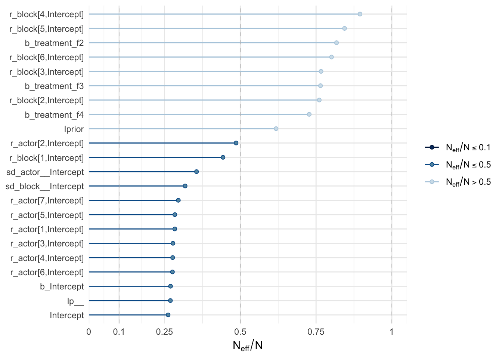
圖 57.11: Effective sample size ratios (neff/N) for all parameters of brms model b13.4. brms automatically uses non-centered parameterization, producing healthy sampling efficiency. Ratios near 1.0 indicate efficient sampling.
使用 brms 時，我們可以用 bayesplot 套件中的 mcmc_trace() 來檢查採樣軌跡圖，用 mcmc_neff() 來檢查有效樣本量：
mcmc_trace(b13.4, pars = c("b_Intercept", "b_treatment_f2", "b_treatment_f3",
"b_treatment_f4", "sd_actor__Intercept",
"sd_block__Intercept")) +
theme_minimal()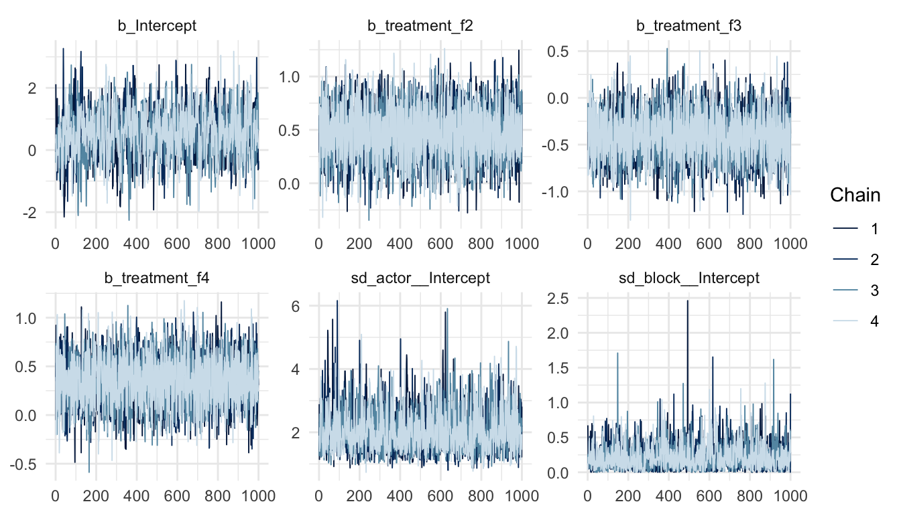
圖 57.12: Trace plots for the population-level parameters and group-level standard deviations of brms model b13.4.